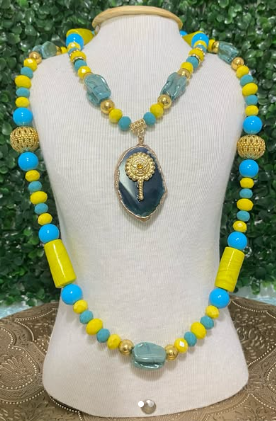
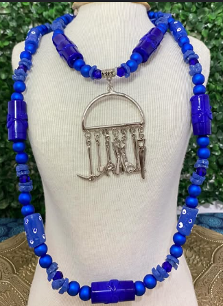
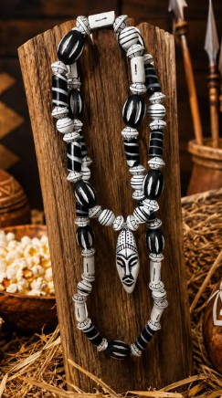
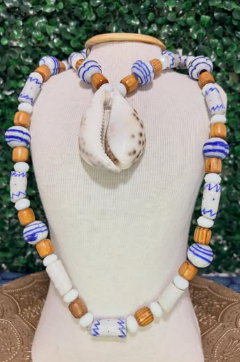

Ofa Omin · Joias de axé
Fios de conta
com intenção
e axé.
Peças que carregam presença, propósito e identidade. Conheça o trabalho da Ofa Omin.
Encomendas por mensagem direta

OFaOMIN
Feito com intenção · Ofa Omin
01 04
01Sobre a marca
Presença que
se faz fio a fio.
Na Ofa Omin, cada peça nasce com intenção e axé. Fios de conta, brajás e peças de proteção compõem um trabalho conectado às referências de Umbanda e Candomblé.
Um espaço para conhecer os detalhes das peças e conversar diretamente com a marca sobre encomendas.
Conheça o perfilIntenção e axéUmbanda ·
CandombléEncomendas na DM
02Destaques do perfil
Peças com presença.
Alguns dos nomes e trabalhos apresentados no perfil.
01 /
DESTAQUEOxossi

02 / DESTAQUEOgun
03 / DESTAQUEBrajás
04 / DESTAQUEFio de proteçãoConsulte disponibilidade e detalhes diretamente com a Ofa Omin.
03Galeria
Um olhar de perto.
Imagens das peças e momentos compartilhados no perfil.
Acompanhe de perto